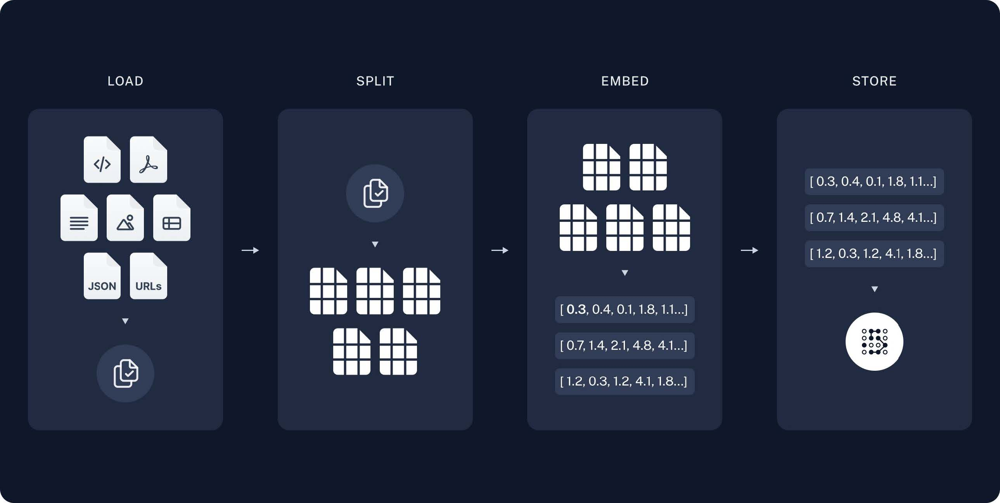
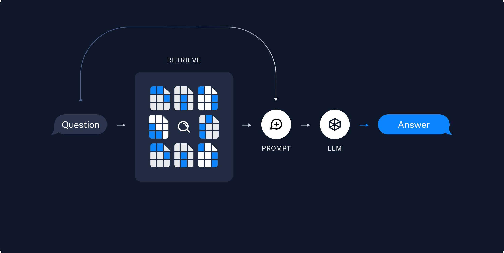

RAG（检索增强生成）
RAG 全称是“Retrieval-Augmented Generation”，即“检索增强的生成”。是一种结合了检索和生成的技术，用于增强语言模型的能力。RAG 的核心思想是利用外部知识库或数据集来辅助模型的生成过程。它通过以下两个步骤来生成更准确和相关的回答：
- 检索：从外部知识库或文档中检索与输入问题相关的信息。
- 生成：利用检索到的信息，生成更精确和上下文相关的回答。
通俗地讲，就是用户问 AI 一个问题，然后 AI 马上去知识库（类似于翻书、翻词典）找到对应的词条，然后根据这个词条回答用户。
看过其他文章的同学可能会问，为什么这里少了两个阶段：
- 编码阶段：检索到的文档或文本片段会与原始查询一起被编码成高维向量（多维数组的专业说法，只不过这里的多维多到几百、上千的那种）。
- 融合阶段：编码后的向量会进行融合，以生成一个综合的表示，这个表示同时包含了原始查询和检索到的相关信息。
的确很多 RAG 应用（包括这门课后面的实战案例）是包含以上两个步骤的，也就是说会包含四个阶段：
- 检索阶段
- 编码阶段
- 融合阶段
- 生成阶段
但是我们的实战案例 1 并不需要编码和融合阶段，所以我们可以看出，编码和融合阶段并不是 RAG 应用必需的，检索和生成阶段才是 RAG 应用必需的。
根据奥卡姆剃刀原则，如无必要，勿增实体。我们在规划设计一个 RAG 应用的时候，也尽量勿增实体，如果不需要添加编码和融合阶段，那我们就不添加。
RAG-索引

步骤：
-
拆分：按一定规则把文档拆分成小块，借助文档拆分器实现
- 加载：加载不同格式的文档，借助文档加载器实现
-
存储：对文档块进行向量化，并存储在向量数据库中
RAG-检索和生成

步骤：
- 检索：根据用户的输入，借助检索器从向量数据库中检索出相关的块
- 生成：LLM 使用包含问题答案的块进行问答
RAG 分片核心代码
# 读取 ./data/data.md 文件作为运维知识库
file_path = os.path.join('data', 'data.md')
with open(file_path, 'r', encoding='utf-8') as file:
docs_string = file.read()
# Split the document into chunks base on markdown headers.
headers_to_split_on = [
("#", "Header 1"),
("##", "Header 2"),
("###", "Header 3"),
]
text_splitter = MarkdownHeaderTextSplitter(headers_to_split_on=headers_to_split_on)
splits = text_splitter.split_text(docs_string)
print("Length of splits: " + str(len(splits)))
print(splits)
原理：
- 借助 LangChain text_splitter 对 Markdown 运维专家知识库进行分片
- 再将分片的段落进行 Embedding 向量化
RAG Embedding 核心代码
# 向量检索时会把 input Embedding 之后转成向量
from openai import OpenAI
client = OpenAI()
response = client.embeddings.create(
input="payment 服务是谁维护的？",
model="text-embedding-3-small"
)
print(response.data[0].embedding)
# 输出 1536 维向量
[0.013615109957754612, -0.03324897587299347, 0.055096786469221115, 0.008762987330555916, -0.004749380052089691, -0.0022156040649861097, -0.015192712657153606, 0.051093120127916336,
......
]
原理：
- 借助 OpenAI Embedding 模型对每个分片进行向量化，返回特定维度的向量
- Embedding 模型可选：text-embedding-3-small、text-embedding-3-large
RAG Embedding 模型选择
基础概念
最基础的两个概念：对话模式和返回结构化数据
三个重要概念——元数据、文本摘要、机器翻译
三个重要概念：向量与嵌入模型、向量数据库、通过相似度来检索知识
对话模式
用户与 AI 进行对话
用户、AI 与系统
三种角色：用户（User）、助手（assistant）、系统（system）
系统消息是可选的。目前除了 OpenAI 之外，很多大模型都不支持系统这一角色。
记忆
AI 的记忆是有上限的，不同的大模型甚至同一个大模型在不同版本所支持的记忆上限是不同的，但是有一点是肯定的，就是记忆是有上限的，区别只是上限有多高而已。就像天才和普通人一样，都是会遗忘，只不过天才能够记住的东西更多而已。
RAG 向量检索原理
pip install langchain
pip install langchain-openai
pip install langchain-community
计算距离的几个方法。
class EmbeddingDistance(str, Enum):
"""Embedding Distance Metric.
Attributes:
COSINE: Cosine distance metric.
EUCLIDEAN: Euclidean distance metric.
MANHATTAN: Manhattan distance metric.
CHEBYSHEV: Chebyshev distance metric.
HAMMING: Hamming distance metric.
"""
COSINE = "cosine"
EUCLIDEAN = "euclidean"
MANHATTAN = "manhattan"
CHEBYSHEV = "chebyshev"
HAMMING = "hamming"
RAG 提示语
System Prompt： 您是问答任务的助手。使用以下检索到的上下文来回答问题。如果您不知道答案，就说您不知道。最多使用三句话并保持答案简洁。 问题：{question} # 用户输入的问题 上下文：{context} # 最近似的 N 个分片 答案：
RAG 运维知识库示例
module_4/demo_7/simple_rag.ipynb
RAG 缺点
- 由于文本分片会把上下文逻辑截断，可能导致无法回答内在逻辑关联的问题
- 只能回答显式检索问题，无法回答全局性/总结性问题，例如：“谁维护的服务最多？”